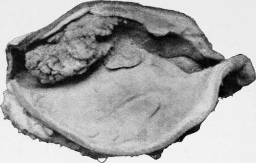
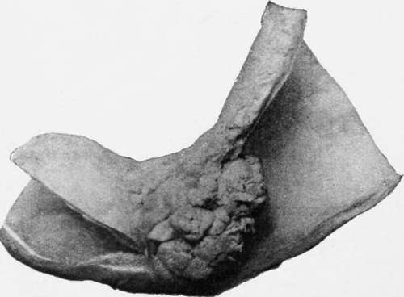

Plastic Linitis
Description
This section is from the book "Cancer Of The Stomach", by A. W. Mayo Robson, D.Sc, F.R.C.S.. Also available from Amazon: Cancer of the Stomach.
Plastic Linitis
The term "plastic linitis" has been used somewhat indefinitely to indicate a chronic induration and thickening of the walls of the stomach with a marked diminution of the gastric cavity.
It is an extremely rare condition that would be seldom described if all cases of diffuse sarcoma or carcinoma of the stomach walls could be excluded.
The following example, in which a very atypical epithelioma is said to have been found, but which otherwise corresponds to the condition under consideration, serves to illustrate the indefinite character of the affection :
Gayet And Patel : Total Gastrectomy For Plastic Linitis
In this case the patient, a woman, aged forty-four years, was operated on for gastric cancer infiltrating the entire walls of the stomach. Professor Jaboulay performed gastrectomy. An analysis of the gastric contents previous to operation had given total acidity 1.93, HCl 1.13; no free HCl; no lactic acid. At the operation no enlarged lymphatic glands were found after gastrectomy ; the duodenum was closed and a loop of the jejunum was brought up to a small piece of the cardiac end of the stomach which had been left. On microscopical examination, after many sections had been made it was found that the lesion was a very atypical epithelioma originating in a chronic inflammation. The inflammation showed nothing specific and there was nothing to suggest tuberculosis, no giant cells, no disintegration, no glands. (Arch. Gener. De Med., 81st Year, Vol. I, P. 770)
Roux (Rev. Med. de la Suisse Romande, January 20th, 1905) reports the following case: A coachman, aged thirty-three years, was admitted to hospital on June 24th, 1901. He had been in good health until September, 1900, when he began to suffer from gastric distension immediately after food, acid eructations, and a sensation as though the passage of food were obstructed. Appetite was good. A stay in his native country produced great, though temporary, improvement, but on January loth, 1901, he began to vomit after each meal. If food were retained for any time it produced a sensation of gastric oppression, which was relieved when vomiting occurred. The returned food was undigested. He became greatly emaciated, though his appetite remained excellent. There was no melaena, and neither hamiatemesis nor pyrosis. The haemoglobin was 75 per cent., and the red lips contrasted with the pallor of the skin. The abdomen was retracted. It was difficult to palpate the epigastrium on account of rigidity of the recti muscles, especially on the right side. Traube's semilunar space was extremely tympanitic. After a test meal the total acidity of the gastric juice was 4.6 per mille. Free HCl was absent, and there was much lactic acid. On inflation the outlines of the stomach were not visible. A diffuse, inoperable tumour was suspected. Laparotomy was performed on June 26th, 1901. The stomach was small and rigid, and the pyloric portion was grooved by a number of irregularly-placed circular indentations, which resembled those on certain Bologna sausages. It was hard, and appeared to be solid, though a stomach-tube could be felt indistinctly to be arrested at about the middle indentation. The superior (cardiac) half of the stomach, though less indurated, was extremely thickened. Total gastrectomy was precluded by the condition of the walls and the numerous adhesions about the cardiac end. Anterior gastroenterostomy appeared to offer the best chances, and to be the only possible procedure. The peritoneal coat was thin. The muscular coat, however, was more than 1 cm. in thickness at its thinnest part. It was friable, of a colour resembling chamois leather, and traversed by dense whitish strands of connective tissue. In places there were yellow, fatty patches. On opening the mucosa a greenish, bilious fluid, which contained remnants of food and a cherry-stone swallowed three or four days previously, escaped. The mucosa was blackish, hamiorrhagic, smooth and friable, and appeared to be superficially ulcerated. The introduction of a finger revealed that the interior of the stomach presented no trace of the circular folds present on the surface. Towards the pylorus the finger completely filled the lumen. Owing to the mobility and looseness of the mucous membrane of the coil of jejunum selected, there was no difficulty in approximating the mucous membranes. The opening after completion of the sutures easily admitted two fingers. After the operation there was great collapse, but with the constant hypodermic adminstration of stimulants, etc., the man rallied. On July 11th the wound had healed and on August 2nd lie was discharged, having gained more than 11 lb. He was in good health in the spring of 1904.
In true plastic linitis there is no evidence of new growth, the thickening being due to hypertrophy of the muscular coat and infiltration of the wall of the stomach with inflammatory exudation, which in places has been converted into fibrous tissue. An almost similar appearance may be produced by cancer as in the so-called " leather-bottle stomach," of which a photograph from the Royal College of Surgeons Museum furnishes a good example (Plate IV, p. 63).
The symptoms are those of chronic gastric irritation associated with epigastric pain, tenderness and vomiting. Emaciation occurs as the result of inability to take or retain food. A hard tumour in the epigastrium extending under the left costal margin is suggestive of carcinoma, though the tenderness of the epigastrium and the rigidity of the recti point to inflammation rather than growth.
Even in the absence of new growth, free HCl may not be found, as in Roux's case. Owing to the presence of perigastritis numerous adhesions may be found.
Treatment
Medical treatment in the shape of careful dieting, rest, and sedatives will have usually been tried before the surgeon sees the case. In plastic linitis surgical treatment is called for.
If there is reason to believe that cancer or sarcoma are not causing the trouble, a well-planned gastroenterostomy, as in Roux's case, offers a good chance of relief or cure.
Villous growth near lesser curvature, found post mortem in an aged woman.
Polypus near pylorus, which caused death by vomiting. The patient was a woman aged ninety-two.
If, however, there is a suspicion of the disease being malignant, complete gastrectomy is advisable, especially if the organ is found to be free from complex adhesions and the lower end of the oesophagus can be dragged down sufficiently to render approximation of the duodenum or jejunum possible.
An oesophageal bougie introduced into the stomach through the oesophagus renders dissection of the cardiac end of the stomach from the gullet easier, and it also facilitates the process of suturing the opening in the oesophagus to the opening in the bowel.
If the patient's condition or the anatomical arrangements of the parts renders either gastroenterostomy or gastrectomy impracticable, the operation of jejunostomy will enable the patient to be fed artificially, and by giving rest to the stomach may so far alleviate the symptoms of irritation as to enable food to be again taken by the mouth after a little time.
Continue to:
- prev: Chapter V. Simple Tumours Of The Stomach That May Be Mistaken For Cancer
- Table of Contents
- next: Adenoma
Tags
stomach, operation, cancer, tumour, ulcer, gastric, gastrectomy